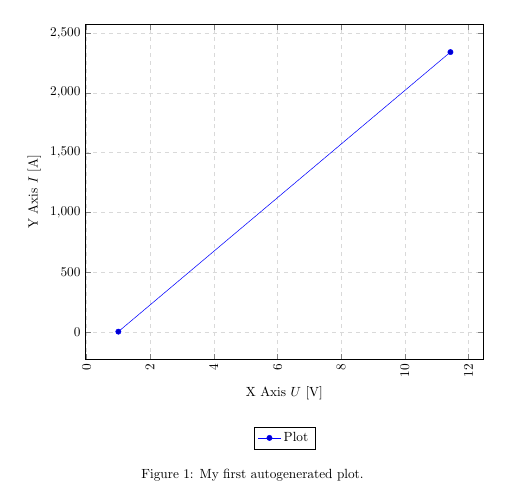

Visualizing your data is easily done with auto-generated plots using the pgfplots package. It's strongly recommended
to read Lesson 9 before, since I will omit some basic statements about .csv files and basically use the same file for my plot.
To plot our data, we will use the following code:
\documentclass{article}
\usepackage{siunitx}
\usepackage{tikz} % To generate the plot from csv
\usepackage{pgfplots}
\pgfplotsset{compat=newest} % Allows to place the legend below plot
\usepgfplotslibrary{units} % Allows to enter the units nicely
\sisetup{
round-mode = places,
round-precision = 2,
}
\begin{document}
\begin{figure}[h!]
\begin{center}
\begin{tikzpicture}
\begin{axis}[
width=\linewidth, % Scale the plot to \linewidth
grid=major, % Display a grid
grid style={dashed,gray!30}, % Set the style
xlabel=X Axis $ U $ , % Set the labels
ylabel=Y Axis $ I $ ,
x unit=\si{\volt}, % Set the respective units
y unit=\si{\ampere},
legend style={at={(0.5,-0.2)},anchor=north}, % Put the legend below the plot
x tick label style={rotate=90,anchor=east} % Display labels sideways
]
\addplot
% add a plot from table; you select the columns by using the actual name in
% the .csv file (on top)
table[x=column 1,y=column 2,col sep=comma] {table.csv};
\legend{Plot}
\end{axis}
\end{tikzpicture}
\caption{My first autogenerated plot.}
\end{center}
\end{figure}
\end{document}
This plot will show up in our .pdf file after compilation:

...
\usepackage{tikz}
\usepackage{pgfplots}
...
\pgfplotsset{compat=newest}
\usepgfplotslibrary{units}
...
\begin{figure}[h!]
\begin{center}
\begin{tikzpicture}
\begin{axis}[
width=\linewidth, % Scale the plot to \linewidth
grid=major,
grid style={dashed,gray!30},
xlabel=X Axis $U$, % Set the labels
ylabel=Y Axis $I$,
x unit=\si{\volt}, % Set the respective units
y unit=\si{\ampere},
legend style={at={(0.5,-0.2)},anchor=north},
x tick label style={rotate=90,anchor=east}
]
\addplot
% add a plot from table; you select the columns by using the actual name in
% the .csv file (on top)
table[x=column 1,y=column 2,col sep=comma] {table.csv};
\legend{Plot}
\end{axis}
\end{tikzpicture}
\caption{My first autogenerated plot.}
\end{center}
\end{figure}
...
The first part only includes the necessary packages, the second part has only two commands as well, where
\pgfplotsset{compat=newest} disables the backward compatibility for pgfplots, so we can place the legend of our
graph below the plot and \usepgfplotslibrary{units} adds two new commands (x unit and y unit), which allows for nice
formatting of units in brackets. Most parts from the last part should be self-explanatory. We have width, xlabel,
ylabel and more. You should comment them out and explore them on your own.
The most important part is:
...
table[x=column 1,y=column 2,col sep=comma] {table.csv};
...
Given a .csv file like:
column 1,column 2 1,2 11.432,2342.23123123
we have to put the name of one column for our x, in this case x=column 1 and a second column for our y, since there are only two columns, we choose y=column 2. Again, the col sep=comma indicates that we use comma as our column separator. We can copy the whole snippet as shown above and use it over and over again, we only have to change the columns we want to plot and the filename. There are a lot of options to style the plots and have bar charts and so forth.